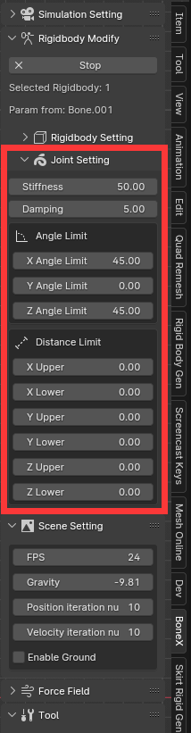

关节
关节的组成部分
在刚体修改模式中，按“C”，将在骨骼位置创建刚体。 如果骨骼有父骨骼，则会在骨骼的头部创建一个关节来连接父骨骼，子骨骼可以围绕关节旋转和移动。 关节设置中的轴指的是骨骼的局部轴（骨骼的局部轴可以在骨架属性armature->Data->Viewport Display->Axes中设置显示）。 刚体的质心将固定在骨骼的尾部，因此如果没有父骨骼，作为单个刚体的碰撞行为会有点奇怪。
两个刚体之间的连接可以看作是一个弹簧，两个刚体通过弹簧力连接。
关节属性
刚度：定义弹簧的刚度。
阻尼：定义弹簧的阻尼。
角度约束：硬约束，限制刚体相对旋转。 由于PhysX的限制，只能设置对称角度约束。 如果只想约束一侧，可以在父骨骼上添加kinematic刚体，并将其放置在要约束的一侧，以约束动态刚体的运动。
距离约束：硬约束，限制刚体相对位移。
硬约束：面板中设置的距离约束和角度约束。 这是您告诉 physx 不应超过的约束范围。 如果用力太大将他推离硬约束范围，就会受到很大的反作用力试图返回。
软约束：连接刚体的弹簧可以称为软约束，即面板中的刚度和阻尼。 它表示刚体在硬约束范围内会受到弹簧的影响。
骨骼编辑模式下的的旋转对于关节很重要，在创建骨架时请注意这一点。
关节约束的初始位置基于骨骼的静止位置。 您可以通过按 Alt+R Alt+G Alt+S 将骨骼重置到初始位置。